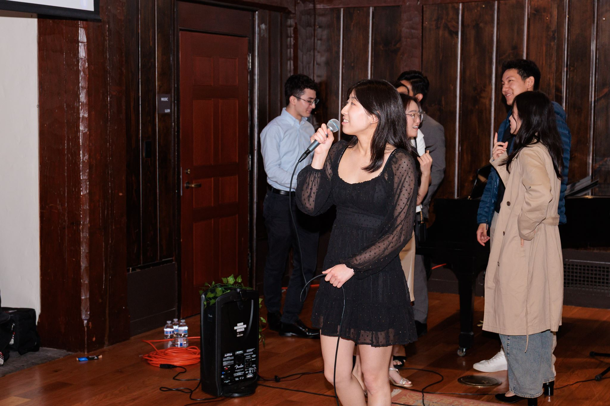
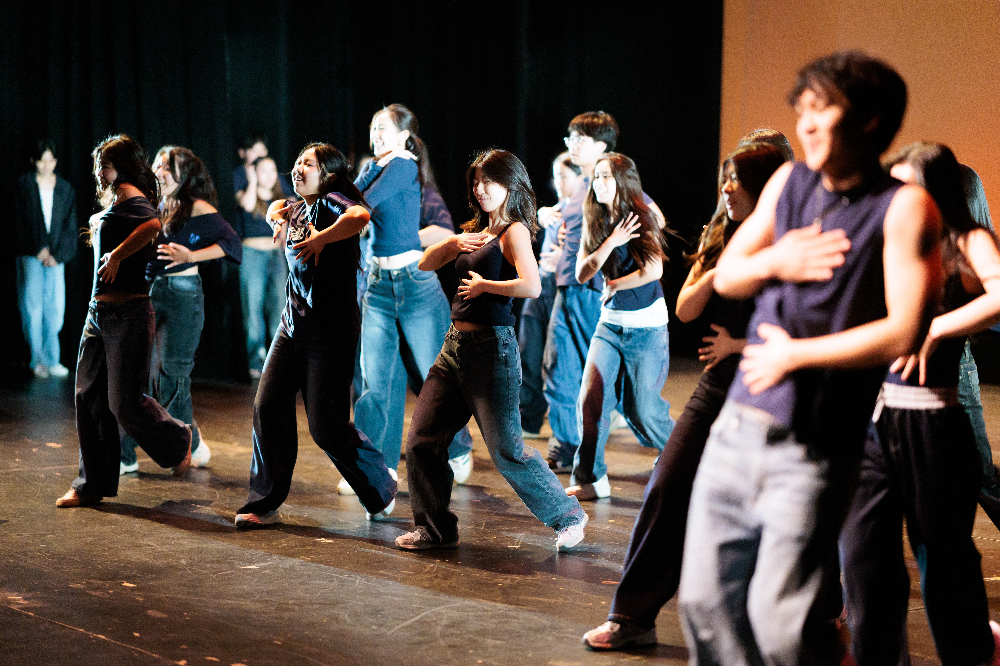
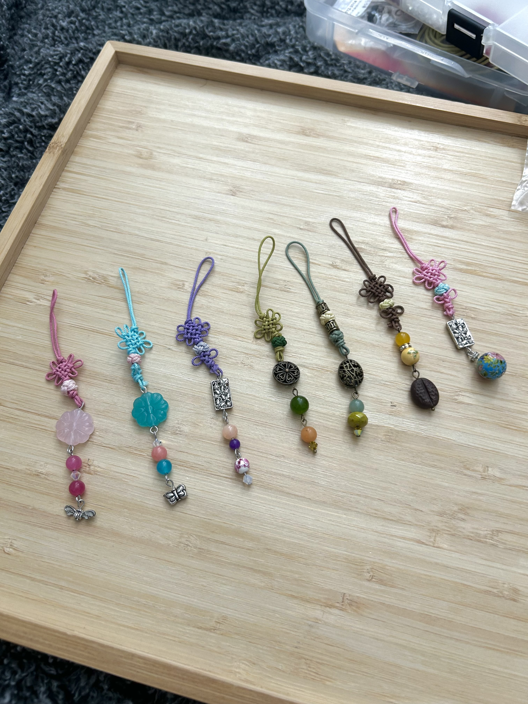
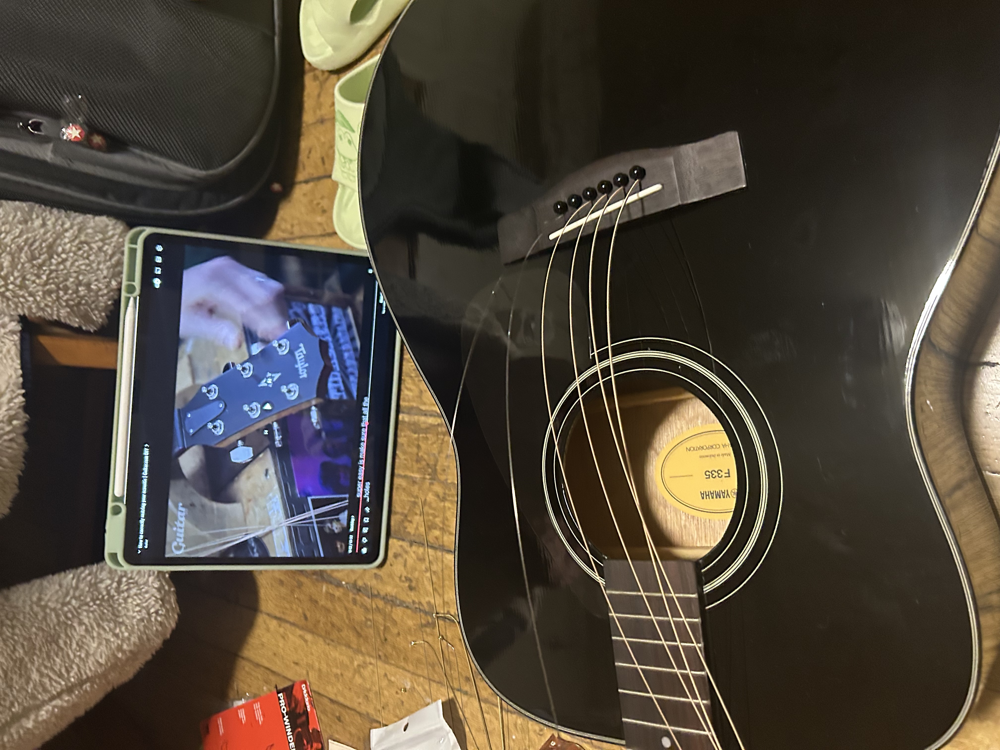
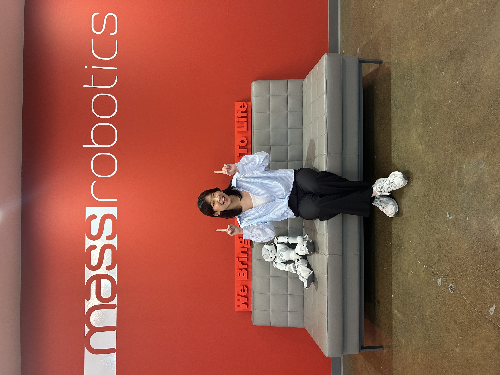

some of the ways I like to fill my spare time!







Hi! My name's Joelle, and I'm a junior at Harvard studying Mechanical Engineering. I grew up in New Jersey and Colorado, which has fostered a deep appreciation for nature and the outdoors. In my free time, I love finding new songs to sing as well as playing tennis and running along the Charles river! I'm a self-taught guitarist and love anything and everything jazz.
Growing up, films like Iron Man and Big Hero 6 inspired a curiosity for building that quickly spiraled into robotics kits, Lego Robotics and eventually FRC in high school! Outside of robotics competitions, I also explored engineering design through the NJ Steam Tank challenge, where my team placed as a finalist in the 2021 competition. Engineering excites me because it's a field where the opportunities are endless and there's always something new to learn! Post-graduation, I hope to develop products with human-centered design, such as consumer technology or search-and-rescue (SAR) robots.



